Étape 0, avant de coller : renuméroter les figures déjà dans le Doc. Ctrl+H, cocher « Respecter la casse », et remplacer dans CET ORDRE (chaque fois « Figure N » puis « figure N ») : 7 → 17, 6 → 16, 5 → 14, 4 → 7, 3 → 4.
Numérotation finale : Partie I = figures 1 à 6 (dont 3, 5, 6 nouvelles), Partie II = 7, Partie III = 8 à 13 (toutes nouvelles), Partie IV = 14 à 17 (dont 15 nouvelle).
Ensuite, bloc par bloc : lire la ligne rouge (où coller), copier le contenu entre les traits, Ctrl+V dans le Doc. Les photos viennent avec le texte.
À la fin : Ctrl+H [NOM] → nom de Miriam, puis mettre à jour la liste des figures.
Bloc 1 : Partie I, § II (fiche technique) : coller à la fin du paragraphe qui décrit le site
La maquette exposée dans les locaux désigne l'ouvrage sous le nom de « STEP Kenitra Est » (figure 8a). Le plan de masse affiché sur place (figure 8d) situe, outre les ouvrages des filières eau et boues, une unité de désulfurisation, la cogénération, une torchère et une désodorisation biologique, et réserve une emprise pour une deuxième phase d'extension.
Bloc 2 : Partie I, § II (fiche technique) : après le bloc « La maquette exposée… » : FIGURE plan de masse
Les extraits du plan de masse de la figure 3 montrent l'organisation du site : la zone de digestion, avec le digesteur, la désulfurisation et la cogénération, voisine des flottateurs (a), puis les décanteurs primaires, les épaississeurs, le prétraitement, la désodorisation biologique et l'aire de stockage des boues déshydratées (b). La filière boues et la production d'énergie occupent ainsi une emprise contiguë à la filière eau, ce qui limite les distances de pompage des boues et de transport du biogaz.
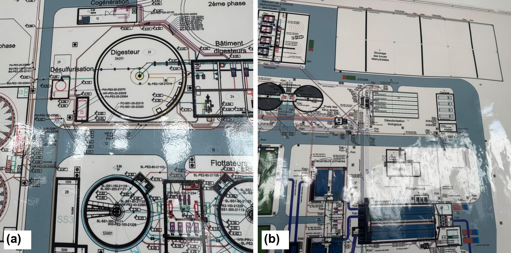
Figure 3 : Extraits du plan de masse affiché à la station. (a) Zone de digestion : digesteur, désulfurisation, cogénération et flottateurs ; (b) décanteurs primaires, épaississeurs, prétraitement, désodorisation biologique et stockage des boues déshydratées (clichés : Miriam [NOM], stage à la STEP de Kénitra).
Bloc 3 : Partie I, § III Le parcours de l'eau : au début de la section, après sa première phrase (qui renvoie à la figure 4) : FIGURE flux eau
La figure 5 suit le parcours de l'eau sur le site, de l'entrée à la sortie. Chaque étape retire une fraction différente de la pollution : les déchets grossiers au dégrillage, les sables et les graisses au dessablage-déshuilage, les matières décantables à la décantation primaire, puis la pollution dissoute dans le bassin biologique, avant que la clarification ne sépare l'eau traitée de la boue.
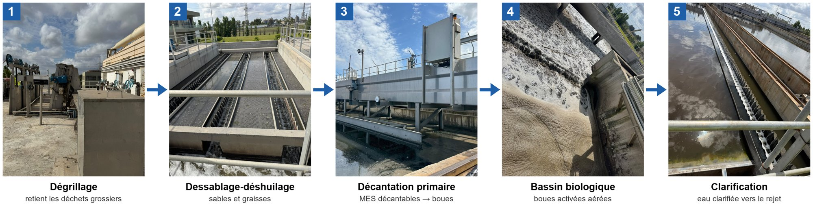
Figure 5 : Le parcours de l'eau à la STEP de Kénitra, de l'entrée au rejet (clichés : Miriam [NOM], stage à la STEP de Kénitra).
Bloc 4 : Partie I, § III.3 (aération) : REMPLACER « [À compléter : nombre et volume des bassins, type de diffuseurs, nombre et puissance des surpresseurs, consigne d'oxygène dissous.] » par
Le traitement secondaire comprend deux bassins biologiques (lignes 1 et 2), deux clarificateurs, un poste de recirculation des boues et une fosse d'homogénéisation des boues (Waterleau, s.d.). L'air est fourni par des surpresseurs Aerzen de la gamme Delta Blower (figure 13f). [À compléter : volume des bassins, puissance des surpresseurs, consigne d'oxygène dissous.]
Bloc 5 : Partie I, § IV (digesteurs) : REMPLACER « [À compléter : mode de brassage des digesteurs, relevé sur place.] » par
Le brassage est assuré par réinjection de biogaz : au sommet de chaque digesteur, une couronne de distribution alimente des cannes plongeantes qui maintiennent la boue en mouvement (figure 13b).
Bloc 6 : Partie I, § IV (boues) : coller après la phrase sur la déshydratation
La filière boues enchaîne un épaississement, une flottation, la digestion et la déshydratation (Waterleau, s.d.). Les boues déshydratées sont évacuées par une vis vers des bennes (Waterleau, s.d.).
Bloc 7 : Partie I, § IV Le parcours des boues : à la fin de la section (avant le titre « V. La chaîne de valorisation du biogaz ») : FIGURE flux boues-énergie
La figure 6 relie, sur le site, la filière boues à la production d'énergie. Les boues sont pompées vers les digesteurs, où leur matière organique est convertie en biogaz ; celui-ci est stocké dans les gazomètres, puis brûlé dans les moteurs de cogénération, qui produisent de l'électricité et la chaleur nécessaire au maintien des digesteurs en régime mésophile. Cette chaîne est l'objet même de la problématique : c'est elle qui transforme un déchet de l'épuration en une ressource énergétique pour la station.
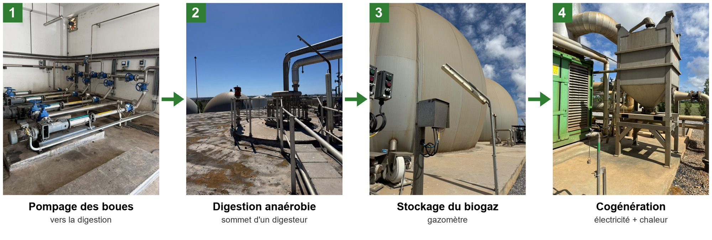
Figure 6 : De la boue à l'énergie : pompage des boues, digestion anaérobie, stockage du biogaz et cogénération (clichés : Miriam [NOM], stage à la STEP de Kénitra).
Bloc 8 : Partie III, fin du « I. Cadre et déroulement de l'étude » (juste avant le titre « II. Matériels expérimentaux ») : FIGURE 8
La figure 8 présente la station telle qu'elle a été observée pendant le stage. La maquette (a, b) et le plan de masse (d) exposés dans les locaux de la station ont servi à repérer les ouvrages des filières eau, boues et biogaz avant les visites de terrain. La vue (c), prise depuis une passerelle de la filière eau, montre les bassins de traitement et, en arrière-plan, les gazomètres de la filière boues : sur le site même, les deux filières étudiées dans ce travail sont voisines et reliées.
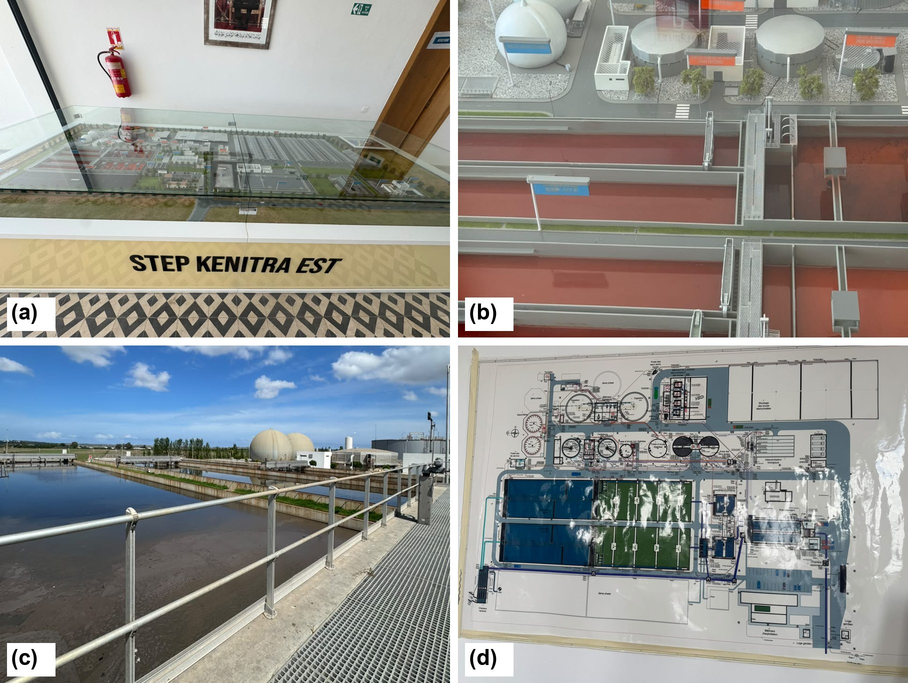
Figure 8 : La STEP de Kénitra. (a) Maquette de la station (« STEP Kenitra Est ») ; (b) détail de la maquette (bassins et ouvrages de la filière boues) ; (c) vue depuis une passerelle de la filière eau, gazomètres en arrière-plan ; (d) plan de masse affiché dans les locaux (clichés : Miriam [NOM], stage à la STEP de Kénitra).
Bloc 9 : Partie III, II : REMPLACER la ligne « [À compléter : marques et modèles réels des appareils du laboratoire.] » par ce bloc : FIGURE 9
Les marques et modèles des appareils, relevés sur place, sont indiqués dans la légende de la figure 9.
Les principaux appareils du laboratoire sont présentés sur la figure 9. La DCO, l'azote et le phosphore sont dosés par des tests en cuvettes prêtes à l'emploi (gamme LCK de Hach Lange) : la cuvette est chauffée dans le thermoréacteur HT 200 S, puis lue au spectrophotomètre DR 3900. Deux gammes de DCO sont disponibles, LCK 314 (15 à 150 mg/L O₂) et LCK 514 (100 à 2 000 mg/L O₂). On choisit la gamme selon l'origine de l'échantillon, eau brute ou eau traitée, ce qui évite des dilutions importantes et les erreurs qu'elles entraînent. La thermobalance (g) donne rapidement la matière sèche d'une boue ; la méthode de référence reste le séchage à l'étuve à 105 °C. Le floculateur (h) sert notamment aux essais de dosage du polymère de conditionnement des boues.
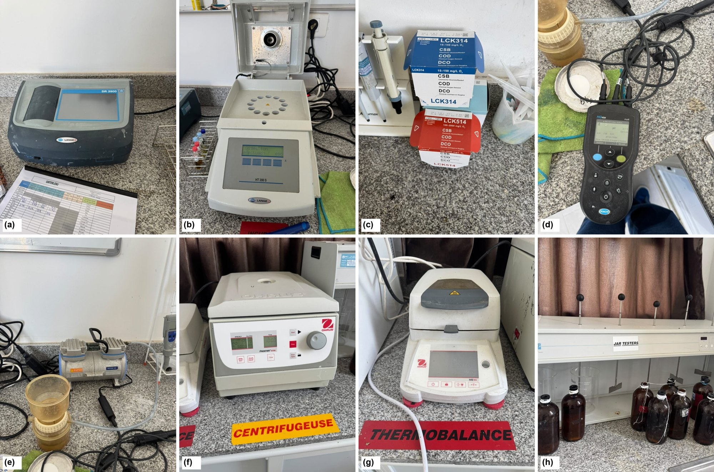
Figure 9 : Équipements du laboratoire de la station. (a) Spectrophotomètre Hach Lange DR 3900 ; (b) thermoréacteur Hach Lange HT 200 S ; (c) tests en cuvettes DCO LCK 314 et LCK 514, micropipettes ; (d) multiparamètre portable Hach ; (e) pompe à vide et rampe de filtration pour le dosage des MES ; (f) centrifugeuse Ohaus ; (g) thermobalance Ohaus ; (h) floculateur (jar-test) (clichés : Miriam [NOM], stage à la STEP de Kénitra).
Bloc 10 : Partie III, fin du « III. Système de suivi industriel (SCADA) » (avant le titre IV) : FIGURE 11
Une partie des mesures est acquise en continu par des instruments installés sur les ouvrages et transmise au SCADA (figure 11). Chaque instrument porte un repère (FIT pour un transmetteur de débit, AIT pour un analyseur), qui relie une valeur enregistrée dans le SCADA à un point précis de l'installation. Au moment du cliché, l'analyseur de la figure 11b affichait un pH de 7,24, des MES de 25,7 g/L et une température de 33,8 °C. Une telle concentration correspond à une boue et non à une eau usée, et cette température se situe dans le domaine mésophile. Les sondes en ligne dérivent avec l'encrassement ; les paramètres de qualité exploités dans ce travail proviennent donc des analyses du laboratoire, et les mesures en ligne servent de contrôle de cohérence.
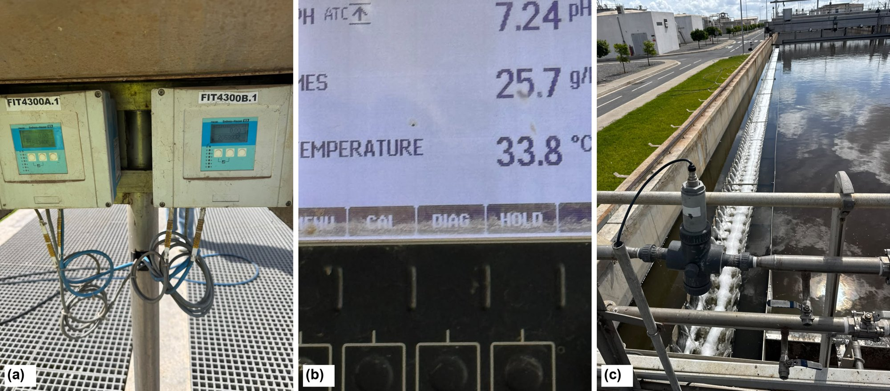
Figure 11 : Instrumentation en ligne. (a) Transmetteurs de débit FIT4300A.1 et FIT4300B.1 ; (b) écran de l'analyseur AIT6202.5 (pH, MES, température) ; (c) sonde immergée en bordure d'un bassin de la filière eau (clichés : Miriam [NOM], stage à la STEP de Kénitra).
Bloc 11 : Partie III, IV.1 Points de prélèvement : coller APRÈS le tableau 8 (avant « 2. Méthodes de prélèvement »)
Le laboratoire désigne les points de la filière eau par des codes repris sur son bulletin d'analyse : EB pour l'entrée primaire (eau brute), ED pour l'entrée secondaire (eau décantée), ET1 et ET2 pour la sortie secondaire des lignes 1 et 2 (eau traitée), B1 et B2 pour les bassins biologiques des deux lignes (Waterleau, s.d.). La filière boues est suivie en onze points : boue primaire décantée (vannes d'échantillonnage des décanteurs A et B), boue primaire épaissie et surnageant des épaississeurs, fosse des boues épaissies, boue du bassin biologique, boue recirculée, fosse d'homogénéisation, fosse des boues flottées, eaux boueuses (déversoir des flottateurs), boue digérée (refoulement des pompes des digesteurs 1 et 2), boue stockée (refoulement des pompes du stockeur) et boue déshydratée, prélevée sur la vis d'évacuation vers les bennes (Waterleau, s.d.).
Bloc 12 : Partie III, IV.2 Méthodes de prélèvement : REMPLACER le 1er paragraphe (« Pour les eaux usées, des échantillons composites… »)
Pour les eaux usées, des échantillons composites ont été constitués sur 24 heures par des préleveurs automatiques réfrigérés, asservis au débit, qui prélèvent un volume proportionnel au débit à intervalles réguliers. Ce mode de prélèvement donne une image représentative de la qualité moyenne de l'eau sur la journée, en lissant les variations horaires de la charge polluante (APHA, 2023). Le plan d'échantillonnage de la station impose que ces préleveurs soient réfrigérés, propres et sans message d'erreur avant chaque campagne : un préleveur en défaut rendrait l'échantillon de la journée inexploitable (Waterleau, s.d.). À la sortie du prétraitement, l'eau rejoint le répartiteur primaire, qui alimente les décanteurs A et B (Waterleau, s.d.).
Bloc 13 : Partie III, fin du IV (avant le titre « V. Analyses des eaux usées » et AVANT la figure 8 si elle y est déjà) : NOUVEAU sous-titre 3 (style Titre 3 comme « 2. Méthodes de prélèvement »)
3. Hygiène et sécurité des prélèvements
Le plan d'échantillonnage associe à chaque point de prélèvement ses dangers et les mesures de prévention (Waterleau, s.d.). Le risque biologique est commun à tous les points, eaux comme boues, et impose la manipulation avec les équipements de protection individuelle (EPI). S'y ajoutent des risques propres à certains ouvrages : noyade et glissade au bord des bassins biologiques, glissade au déversoir des eaux boueuses, et asphyxie au niveau des boues primaires épaissies et du surnageant des épaississeurs, où le prélèvement se fait avec un détecteur d'hydrogène sulfuré (H₂S). Sur la ligne biogaz, le poste du gazomètre est classé ATEX zone 2 (figure 13d) : une atmosphère explosive n'y est pas attendue en fonctionnement normal, mais peut s'y former brièvement en cas d'anomalie ; la signalisation y interdit les flammes nues et les téléphones portables. Ces contraintes ont déterminé l'organisation des prélèvements réalisés pendant le stage.
Bloc 14 : Partie III, fin du IV, après le sous-titre 3 Hygiène et sécurité (avant le titre « V. Analyses des eaux usées ») : FIGURE 12
Les points de prélèvement du tableau 8 sont rattachés aux ouvrages présentés sur la figure 12. Les échantillons composites de 24 heures sont constitués par des préleveurs automatiques réfrigérés (a) : les flacons restent au froid pendant toute la durée du prélèvement, ce qui limite la dégradation biologique de l'échantillon avant l'analyse. Les panneaux d'identification (b, c, d), qui portent le nom et la profondeur de chaque ouvrage, ont permis de rattacher chaque prélèvement à l'étape de traitement correspondante.
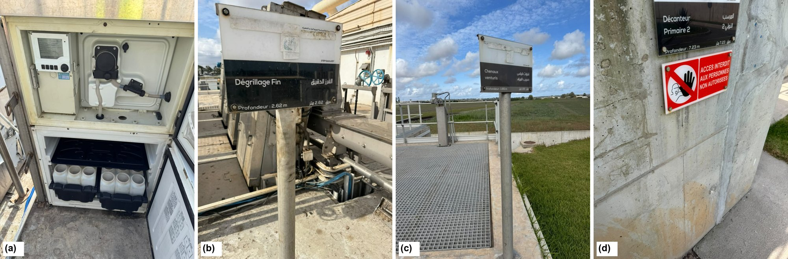
Figure 12 : Prélèvement et repérage des ouvrages. (a) Préleveur automatique réfrigéré Endress+Hauser et ses flacons ; (b) dégrillage fin ; (c) chenaux venturis (mesure du débit) ; (d) décanteur primaire 2 (clichés : Miriam [NOM], stage à la STEP de Kénitra).
Bloc 15 : Partie III, V.2 MES : coller APRÈS la ligne « où M0 est la masse du filtre vide… »
Au laboratoire de la station, les filtres sont conservés en permanence à l'étuve à 105 °C, puis placés trente minutes au dessiccateur avant la pesée initiale ; ils sont manipulés à la pince pour éviter tout échange d'humidité avec les doigts. Après filtration, le filtre sèche à 105 °C jusqu'au lendemain. Pour les MES volatiles (MESv), le filtre est ensuite calciné deux heures à 550 °C au four à moufle, puis pesé (P3) (Waterleau, s.d.). La fraction volatile s'exprime en pourcentage des MES :
MESv (%) = (P2 − P3) / (P2 − P1) × 100
où P1, P2 et P3 sont les masses du filtre vide, après séchage et après calcination. Le protocole interne écrit ce rapport en divisant par le volume filtré ; divisée par V, la différence (P2 − P3) donne une concentration en g/L et non un pourcentage. On a donc retenu ici la forme rapportée à la masse de MES, qui est la seule cohérente avec une expression en pourcentage.
Bloc 16 : Partie III, V.3 DCO : coller À LA FIN du paragraphe DCO
En pratique, la DCO est dosée avec des cuvettes prêtes à l'emploi Hach Lange, LCK 314 (15 à 150 mg/L O₂) pour les eaux traitées et LCK 514 (100 à 2 000 mg/L O₂) pour les eaux brutes et décantées ; les cuvettes sont chauffées dans le thermoréacteur HT 200 S et lues au spectrophotomètre DR 3900 (figure 9). Le bulletin d'analyse distingue la DCO totale et la DCO filtrée (Waterleau, s.d.), dont l'écart renseigne sur la part particulaire de la pollution organique. L'ensemble des tests en cuvettes disponibles au laboratoire est présenté en annexe.
Bloc 17 : Partie III, V.3 DCO : après le bloc « En pratique, la DCO est dosée… » : FIGURE étapes de laboratoire
La figure 10 détaille, sous forme de séquences, les deux analyses les plus fréquentes du laboratoire : la mesure des MES, par filtration, séchage à 105 °C et refroidissement au dessiccateur avant pesée, et la mesure de la DCO, par prise d'essai à la micropipette dans une cuvette prête à l'emploi, minéralisation au thermoréacteur et lecture au spectrophotomètre.
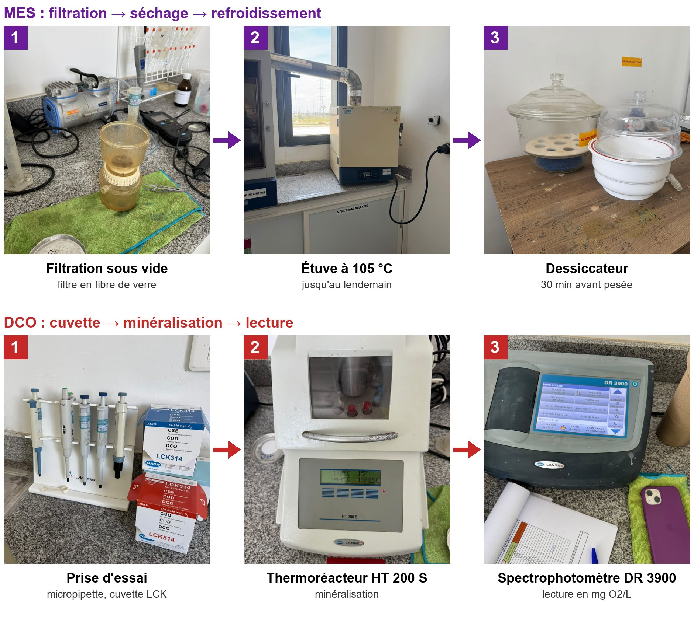
Figure 10 : Séquences opératoires de la mesure des MES et de la DCO au laboratoire de la station (clichés : Miriam [NOM], stage à la STEP de Kénitra).
Bloc 18 : Partie III, V.4 DBO5 : REMPLACER tout le paragraphe DBO5
La DBO5 a été mesurée par la méthode manométrique, selon le protocole du laboratoire (Waterleau, s.d.). L'échantillon est amené à 20 °C dès son retour au laboratoire, afin d'éviter un décrochement de la courbe pendant les premières heures. Un volume d'échantillon, choisi en fonction de la DBO5 attendue (tableau ci-dessous), est introduit dans un flacon brun avec un barreau aimanté, le contenu d'un sachet d'ensemencement et un inhibiteur de nitrification (0,05 g pour la gamme 0–35 mg/L, 0,23 g pour la gamme 0–700 mg/L). Deux pastilles d'hydroxyde de potassium, placées dans le capuchon, piègent le CO₂ produit. Le flacon est incubé cinq jours à 20 °C sous agitation ; la baisse de pression due à la consommation d'oxygène est convertie directement en mg O₂/L. La méthode de référence, par dilution, est décrite par la norme NF EN ISO 5815-1 (APHA, 2023).
| Gamme de DBO5 attendue (mg O₂/L) | Volume d'échantillon (mL) |
|---|---|
| 0 – 35 | 420 |
| 0 – 70 | 355 |
| 0 – 350 | 160 |
| 0 – 700 | 95 |
Le protocole estime la DBO5 attendue à 75 % de la DCO mesurée. Ce coefficient ne sert qu'à choisir la gamme : si la DBO5 réelle est plus faible, la mesure reste valable mais tombe dans le bas de la gamme, avec une précision moindre. C'est pourquoi la gamme a été choisie, pour chaque point, à partir des résultats des jours précédents.
Bloc 19 : Partie III, V.5 Azote et phosphore : REMPLACER tout le paragraphe (il contient « [À compléter ou à supprimer… »)
Les formes de l'azote et le phosphore total sont dosés par tests en cuvettes Hach Lange lus au spectrophotomètre DR 3900 : azote ammoniacal LCK 303 (2 à 47 mg/L N-NH₄), nitrates LCK 339 (0,23 à 13,5 mg/L N-NO₃), nitrites LCK 342 (0,6 à 6,0 mg/L N-NO₂) ou LCK 341 pour les faibles teneurs (0,015 à 0,6 mg/L), azote total LCK 338 (20 à 100 mg/L) et phosphore total LCK 350 (2,0 à 20,0 mg/L P-PO₄), ce dernier après minéralisation dans le thermoréacteur. Le bulletin d'analyse de la station rapporte l'azote Kjeldahl (NTK) et l'azote global (NGL) (Waterleau, s.d.), reliés par :
NGL = NTK + N-NO₂⁻ + N-NO₃⁻
Lorsque l'azote total est mesuré directement (LCK 338), le NTK s'en déduit en retranchant l'azote des nitrites et des nitrates.
Bloc 20 : Partie III, après V.5 (avant le titre « VI. Analyses des boues ») : DEUX NOUVEAUX sous-titres 6 et 7
6. Paramètres de conduite des bassins biologiques
Dans les bassins biologiques B1 et B2, le laboratoire mesure l'oxygène dissous, le potentiel redox, les MES et les MES volatiles de la liqueur mixte, ainsi que le volume décanté en 30 minutes (VD30) (Waterleau, s.d.). Ce dernier, rapporté à la concentration en MES, donne l'indice de boue, qui renseigne sur l'aptitude de la boue à décanter dans les clarificateurs :
IB (mL/g) = VD30 (mL/L) / MES (g/L)
Un indice de boue élevé signale une boue qui décante mal, par exemple en cas de développement de bactéries filamenteuses (voir Partie II).
7. Métaux et micropolluants de l'eau brute
L'eau brute (point EB) fait l'objet d'un contrôle complémentaire des métaux (cuivre, nickel, cobalt, plomb, zinc, fer, cadmium, chrome total et chrome VI, mercure) et de micropolluants minéraux et organiques (chlorures, sulfates, sulfures, sulfites, cyanures, phénols, tensioactifs anioniques, cationiques et non ioniques) (Waterleau, s.d.), principalement par tests en cuvettes (annexe). Ce contrôle relie directement les deux filières étudiées : des rejets industriels chargés en métaux, en sulfures ou en cyanures peuvent inhiber la biomasse épuratoire et les bactéries méthanogènes des digesteurs, et les métaux se concentrent dans les boues, ce qui conditionne leur valorisation agricole (Partie I, § IV).
Bloc 21 : Partie III, VI.4 TAC et AGV : coller APRÈS le paragraphe « Le rapport AGV/TAC est calculé pour chaque prélèvement… »
Le protocole du laboratoire fixe deux repères de conduite : un TAC d'au moins 2 g/L, qui garantit un pouvoir tampon suffisant, et un rapport AGV/TAC compris entre 0,1 et 0,25 (Waterleau, s.d.). Au-delà de 0,25, les acides gras volatils s'accumulent plus vite qu'ils ne sont convertis en méthane, ce qui annonce une acidification du digesteur. Ce sont ces seuils qui servent de référence à l'interprétation de la stabilité des digesteurs dans la Partie IV.
Bloc 22 : Partie III, fin du « VII. Suivi de la production de biogaz » (avant le titre « VIII. Méthodes de calcul ») : FIGURE 13
La figure 13 rassemble les équipements de la filière boues et de la ligne biogaz observés pendant le stage, ainsi que le surpresseur de l'aération. Les boues flottées sont transférées par des pompes volumétriques à rotor excentré (a), adaptées aux fluides concentrés et visqueux. Au sommet du digesteur (b), une couronne alimente les cannes de brassage au biogaz, qui maintiennent la boue homogène et limitent la formation de zones mortes et de croûtes. Le biogaz est stocké dans les gazomètres (c) avant sa valorisation ; la signalisation ATEX zone 2 du poste gazomètre (d) rappelle qu'une atmosphère explosive peut s'y former. Les boues déshydratées sont ensuite étalées sur l'aire couverte de séchage solaire (e). Le surpresseur (f) est présenté ici parce que l'aération est le poste le plus énergivore de la station (Gallo et al., 2024) : c'est face à cette consommation que l'énergie produite par cogénération est évaluée (section VIII).
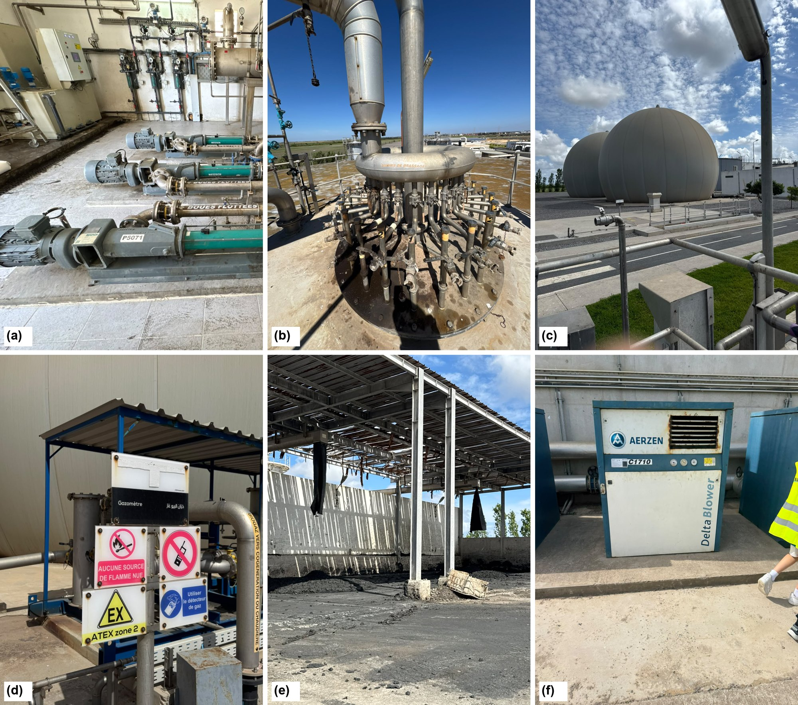
Figure 13 : Filière boues, ligne biogaz et aération. (a) Pompes à rotor excentré des boues flottées ; (b) sommet d'un digesteur, couronne et cannes de brassage au biogaz ; (c) gazomètres ; (d) poste du gazomètre et signalisation ATEX zone 2 ; (e) aire couverte de séchage solaire des boues ; (f) surpresseur d'air Aerzen Delta Blower de l'aération (clichés : Miriam [NOM], stage à la STEP de Kénitra).
Bloc 23 : Partie IV, résultats de la filière eau : après la Figure 14 (ancienne figure 5) et son commentaire : FIGURE observation de terrain
Pendant les visites de terrain, une mousse brune, épaisse et persistante a été observée à la surface d'un bassin aéré de la filière eau (figure 15). Dans les stations à boues activées, ce type de mousse est le plus souvent relié au développement de bactéries filamenteuses, qui dégradent aussi la décantation de la boue (voir Partie II) ; il peut également provenir de tensioactifs apportés par les eaux brutes ou d'une boue trop jeune. L'observation microscopique de la liqueur mixte et le suivi de l'indice de boue permettraient de trancher entre ces causes ; ils n'ont pas pu être réalisés pendant le stage et constituent une perspective de ce travail.
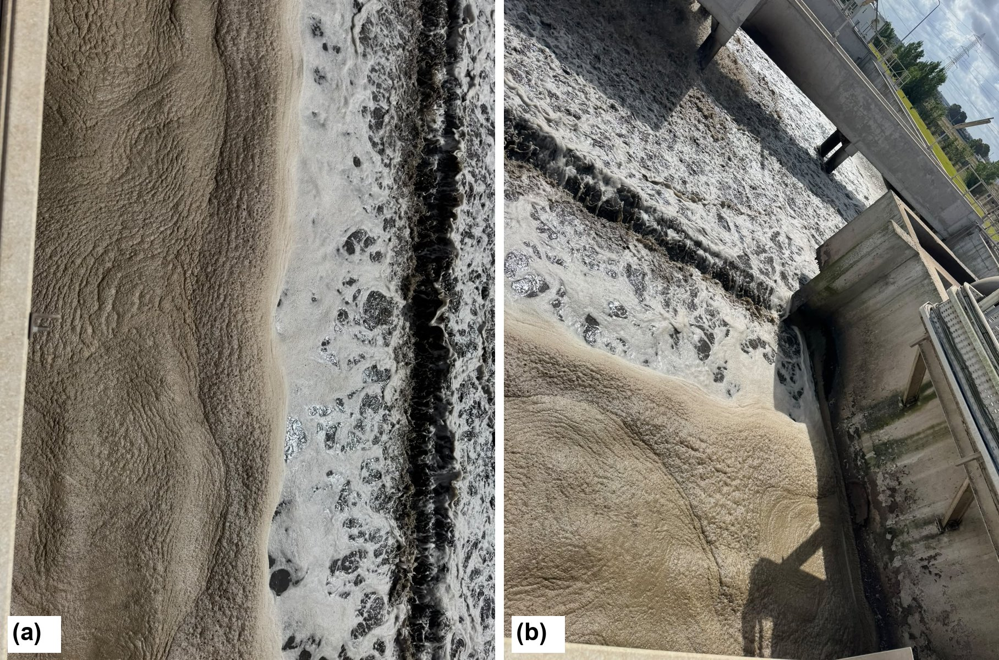
Figure 15 : Mousse brune à la surface d'un bassin aéré. (a) Vue rapprochée de la couche de mousse ; (b) vue d'ensemble, au contact de la zone agitée (clichés : Miriam [NOM], stage à la STEP de Kénitra).
Bloc 24 : ANNEXES : NOUVELLE annexe (titre en style des autres annexes)
Annexe : Tests en cuvettes Hach Lange disponibles au laboratoire de la station
| Test | Paramètre | Gamme de mesure |
|---|---|---|
| LCK 314 | DCO | 15 – 150 mg/L O₂ |
| LCK 514 | DCO | 100 – 2 000 mg/L O₂ |
| LCK 303 | Azote ammoniacal | 2 – 47 mg/L N-NH₄ |
| LCK 339 | Nitrates | 0,23 – 13,5 mg/L N-NO₃ |
| LCK 341 | Nitrites (faibles teneurs) | 0,015 – 0,6 mg/L N-NO₂ |
| LCK 342 | Nitrites | 0,6 – 6,0 mg/L N-NO₂ |
| LCK 338 | Azote total | 20 – 100 mg/L N |
| LCK 350 | Phosphore total / orthophosphates | 2,0 – 20,0 mg/L P-PO₄ |
| LCK 153 | Sulfates | 40 – 150 mg/L SO₄ |
| LCK 311 | Chlorures | 1 – 70 et 70 – 1 000 mg/L Cl |
| LCK 653 | Sulfures dissous | 0,1 – 2,0 mg/L |
| LCK 654 | Sulfites | 0,1 – 5,0 mg/L SO₃ |
| LCK 315 | Cyanures | 0,01 – 0,60 mg/L CN⁻ |
| LCK 345 | Phénols | 0,05 – 5,00 mg/L |
| LCK 332 | Tensioactifs anioniques | 0,05 – 2,0 mg/L |
| LCK 331 | Tensioactifs cationiques | 0,2 – 2,0 mg/L |
| LCK 333 | Tensioactifs non ioniques | 0,2 – 6,0 mg/L |
| LCK 313 | Chrome total et VI | 0,03 – 1,00 mg/L Cr |
| LCK 329 | Cuivre | 0,1 – 8,0 mg/L Cu |
| LCK 337 | Nickel | 0,1 – 6,0 mg/L Ni |
| LCK 360 | Zinc | 0,2 – 6,0 mg/L Zn |
| LCK 306 | Plomb | 0,1 – 2,0 mg/L Pb |
Source : fiches de méthode Hach Lange du classeur du laboratoire de la station (relevé pendant le stage).
Annexe : Planche photographique complémentaire
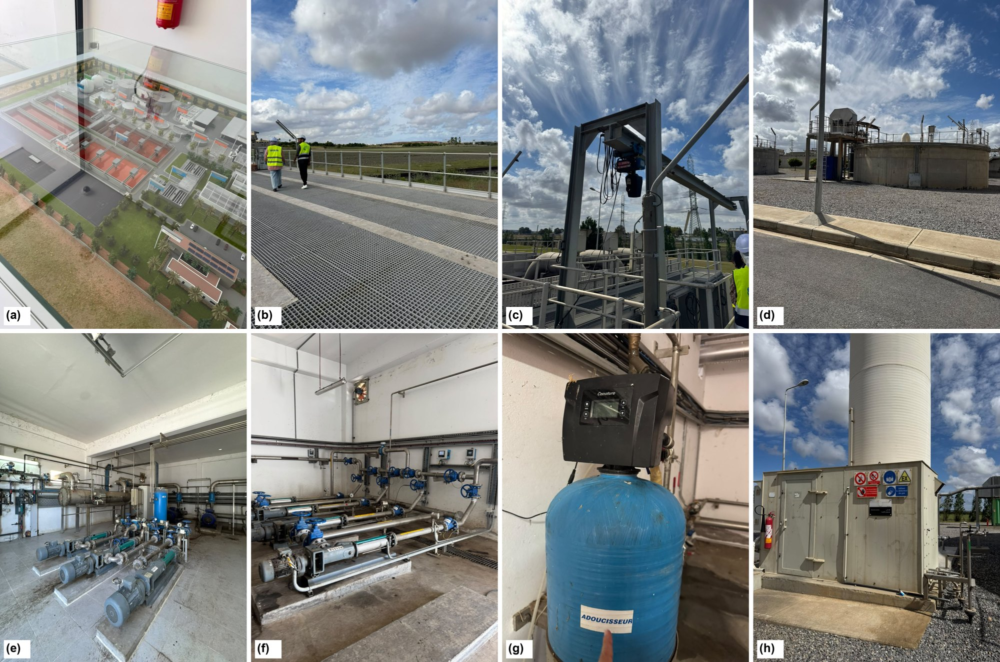
Vues complémentaires de la STEP de Kénitra. (a) Vue générale de la maquette ; (b) passerelles de la filière eau ; (c) portique de levage ; (d) ouvrage circulaire et sa passerelle ; (e) local de pompage des boues ; (f) salle des pompes et collecteurs ; (g) adoucisseur d'eau ; (h) local technique et signalisation de sécurité (clichés : Miriam [NOM], stage à la STEP de Kénitra).
Bloc 25 : RÉFÉRENCES BIBLIOGRAPHIQUES : ajouter (ordre alphabétique, à W)
WATERLEAU. s.d. Protocoles d'analyses du laboratoire (MES, MS, siccité, MV ; DBO5 ; TAC et AGV des boues de digesteurs) et plan d'échantillonnage. Station d'épuration des eaux usées de Kénitra, service Laboratoire et service Process. Documents internes, non publiés.